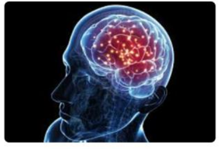
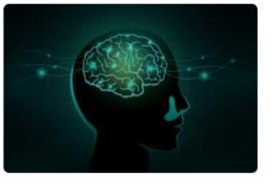
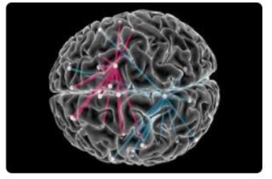
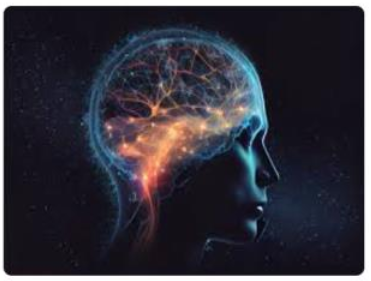
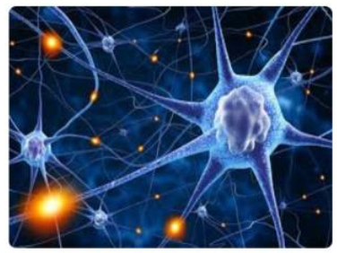
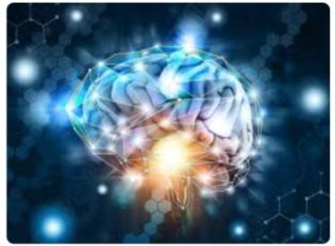
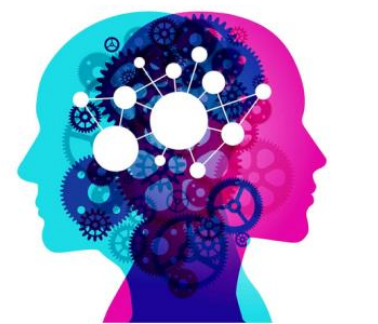
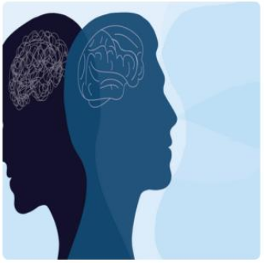

Neuroscience is the scientific study of the nerves system, including the brain, spinal cord, and pheripheral nerves. It encompasses a wide range of disciplines, including biology, psychology, and medicine. Understanding brain function is essantial for unraveling the myterie of human behaviour, cognition, and emotion.
The human brain is an incredibly complex organ, consisting of approximately 86 billion neurons that communicate through trillions of synapses. It is responsible for our thoughts, emotions, memories, and movements, making it central to our existence. The brain is divided into various regions, each responsible for specific functions. For instance, the cerebrum, the largest part of the brain, is involved in higher cognitive functions such as reasoning, problem-solving, and decision-making. Meanwhile, the cerebellum plays a critical role in coordinating movement and balance, highlighting the intricate specialization within this remarkable organ.
|  |  |  |
visual representation of brain anatomy and functions
Neuroplasticity refers to the brain's ability to adapt and reorganize itself in response to experiences, learning, and injury. This remarkable property allows the brain to form new neural connections throughout life, enabling recovery from trauma and adaptation to new environments.
Neuroplasticity is particularly prominent during childhood, a period when the brain is rapidly developing and learning new skills. However, recent research has shown that adults also retain significant plasticity, allowing them to continue learning and adapting well into old age.
|  |  |  |
llustration of neuroplasticity in the brain.
Mental health is a crucial aspect of overall well-being, affecting how we think, feel, and act. It also plays a significant role in how we handle stress, relate to others, and make choices. Mental health conditions, such as depression and anxiety, can impact anyone, regardless of age or background.
Maintaining good mental health is essential for a fulfilling life. Here are some key points about mental health:
|  |  |
Importance of mental health in our lives.
| Function | Discription | Importance |
| Cognition | The mental action acquiring knowledge and undertanding. | Critical for decision-making and problem-solving. |
| Emotion Regulation | The ablity to manage and respond to emotional experiences. | Essential for mental health and social interactions. |
| Memory | The process of encoding, storing, and retrieving information. | Vital for learning and adapting to new itustions. |
| Motor Control | The coordination of movements. | Necesary for physical activity and coordination. |
The human brain is a remarkable organ with incredible capabilities. Understanding its functions and the importance of mental health is crucial for personal well-being and societal progress. As we continue to explore the complexities of the brain, we can unlock new potential for treatment and enhance our quality of life.
Brain Conclusion
A summary of brain functions and their importance.